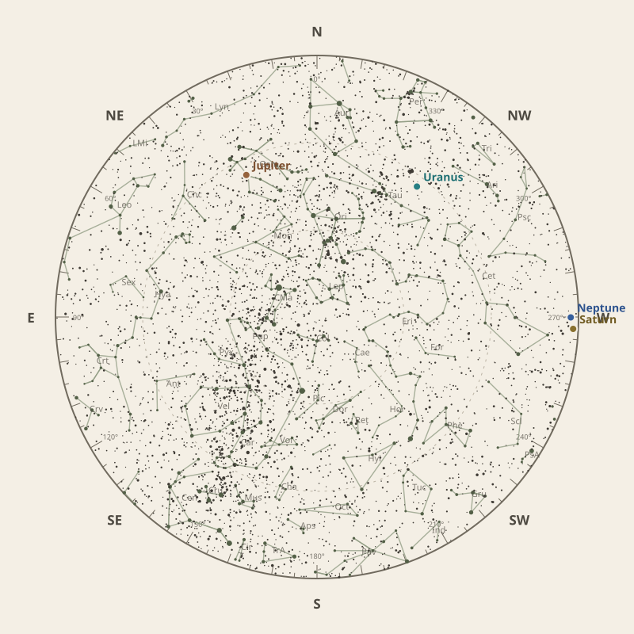

← Annual almanac


North is at the top; east is at the left. Solar System objects shown are above the horizon at 10 pm.
Monthly field almanac
January 2026
Jupiter reaches opposition on 11 Jan 2026 and is highest around 12:00 am.
- New Moon
- 19 Jan Darkest skies
- Full Moon
- 4 Jan Brightest skies
- Best dark window
- 23 Jan 9h 33m
Current conditions
Checking the sky near South East Queensland, Australia…
Sky chart: 15 Jan 2026, 10 pm
South East Queensland, Australia local time.
Show static monthly chart

Night planner
Choose a date to see astronomical darkness, Moon interference, Galactic Centre visibility, and planet altitudes and times.
Best low-Moon dark periods this month
- 7:13 pm–4:46 am9h 33m · 20% Moon
- 7:13 pm–4:45 am9h 32m · 12% Moon
- 7:13 pm–4:44 am9h 31m · 7% Moon
January highlights
- Milky Way
Milky Way core window
1h 17m with 36° altitude.
- Planets
Neptune
Best monthly date at 46° altitude.
- Planetary events
Jupiter opposition
Visible for most of the night.
- Occultations
HIP 22400 lunar occultation
10:30 pm to 11:53 pm; Moon at 33° altitude for the first listed contact.
- Meteor showers
Quadrantids
Peak conditions: 99% Moon illumination; -6° altitude predawn.


Moon phases
91%
80%
20%
12%
80%
Low illumination favours faint targets. Bright lunar targets are best near full Moon.
Download Moon phase CSV →

Galactic Centre sessions
- 3:35 am–4:52 am1h 17m · core to 36°
- 3:37 am–4:51 am1h 14m · core to 35°
- 3:44 am–4:49 am1h 06m · core to 33°


Planet visibility
Evening
- Neptune1 Jan · 7:30 pm46° · Excellent
- Saturn1 Jan · 7:30 pm46° · Excellent
- Uranus28 Jan · 7:00 pm43° · Good
- Venus31 Jan · 7:00 pm1° · Poor
 Neptune
Neptune Saturn
Saturn Uranus
Uranus Venus
VenusOvernight
- Jupiter2 Jan · 12:30 am40° · Good
 Jupiter
JupiterPredawn
- Mercury1 Jan · 4:30 am5° · Poor
- Mars31 Jan · 5:00 am0° · Poor
 Mercury
Mercury Mars
MarsEvents
- Jupiter oppositionVisible for most of the night.
- HIP 22400 lunar occultation10:30 pm to 11:53 pm; Moon at 33° altitude for the first listed contact.
- QuadrantidsPeak conditions: 99% Moon illumination; -6° altitude predawn.


Data and downloads
Positions are unavailable for 2 comet entries.
Occultation times use a smooth lunar limb; confirm grazing events with IOTA Occult 4.